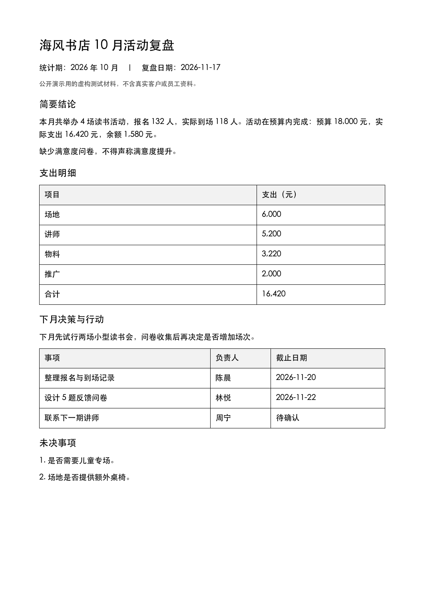

← 返回 Skill 详情semifly · 本地真实运行记录 · 2026-11-17 · 虚构测试材料
1 页活动复盘，2 张可编辑表格
补齐字体后通过实际安装原始 docx Skill，由 Agent 生成 Word 文件。原验证器通过；首次 PDF 中文缺字，配置临时中文字体后，同一 DOCX 渲染正常。
- A4 单页，费用表与行动表均为 Word 原生表格
- 预算 18,000、支出 16,420、余额 1,580 与输入一致
- 保留“待确认”和满意度数据缺失，没有编造结论
基于虚构业务材料；使用 LibreOffice 渲染并逐页目检，未在 Microsoft Word 中打开验收。
真实生成文件经 LibreOffice 渲染后的预览页截图；不是 Microsoft Office 客户端截图。 CLI 默认模型；未记录确切服务端模型 ID，未取得金额账单，未验证 OneAPI 模型组合。

实际产物 · 1 / 1